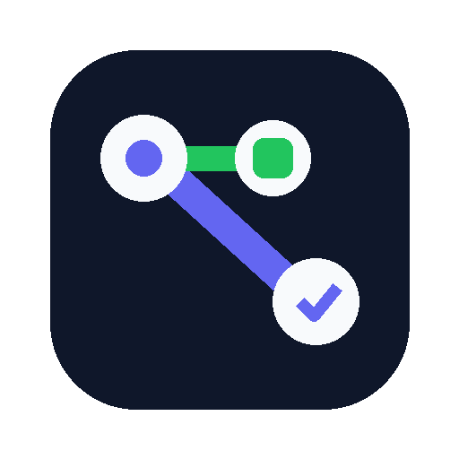

Conditional navigation
Route users to different steps based on context, events, permissions, or async results.

React Flow UI EngineDeclarative flow logic for React apps
react-flow-ui-engine centralizes screen transitions, guards, validation, permissions, nested flows, parallel flows, and same-page conditional content blocks.
npm install @react-flow-ui-engine/core @react-flow-ui-engine/react
Route users to different steps based on context, events, permissions, or async results.
Show or hide content blocks on the current screen with visibleIf.
Render blocks directly with React components or use a data-driven block renderer.
Compose complex journeys without turning one component into a giant state machine.
Product flows often start simple and then grow into many scattered conditional checks: onboarding, checkout, KYC, account setup, role-gated pages, trial upsells, and multi-step forms. This library moves the journey definition into one declarative flow object.
if (plan === 'business' && country === 'AU') {
navigate('/business/au')
} else {
navigate('/personal')
}on: {
SELECT_PLAN: [
{ when: (ctx, event) => event.plan === 'business', goTo: 'businessDetails' },
{ goTo: 'personalDetails' }
]
}Install the core package and the React bindings.
npm install @react-flow-ui-engine/core @react-flow-ui-engine/reactCreate a flow and render it with FlowProvider and FlowRenderer.
import { defineFlow } from '@react-flow-ui-engine/core'
import { FlowProvider, FlowRenderer, type FlowPageProps } from '@react-flow-ui-engine/react'
type SignupContext = {
accountType?: 'business' | 'personal'
}
function SelectAccountType({ flow }: FlowPageProps<SignupContext>) {
return (
<div>
<h1>Select account type</h1>
<button onClick={() => flow.send({ type: 'SELECT', value: 'business' })}>Business</button>
<button onClick={() => flow.send({ type: 'SELECT', value: 'personal' })}>Personal</button>
</div>
)
}
const signupFlow = defineFlow<SignupContext>({
id: 'signup',
initial: 'selectType',
context: {},
steps: {
selectType: {
component: SelectAccountType,
on: {
SELECT: [
{
when: (_ctx, event) => event.value === 'business',
set: (_ctx, event) => ({ accountType: event.value }),
goTo: 'businessDetails',
},
{
set: (_ctx, event) => ({ accountType: event.value }),
goTo: 'personalDetails',
},
],
},
},
businessDetails: { component: BusinessDetails, back: 'selectType' },
personalDetails: { component: PersonalDetails, back: 'selectType' },
},
})
export default function App() {
return (
<FlowProvider flow={signupFlow}>
<FlowRenderer />
</FlowProvider>
)
}| Concept | Meaning |
|---|---|
| Flow | A complete user journey. |
| Step | A page, screen, or state in the journey. |
| Context | Shared flow data used by later steps, content, and rules. |
| Event | An action sent from UI to the engine, for example SELECT_PLAN. |
| Transition | A rule that handles an event and can set context or navigate. |
| Guard | A when function that decides if a transition should run. |
| Content block | Same-page content that can be filtered with visibleIf. |
| Permission | Role or permission gate for steps and transitions. |
A flow definition declares the initial step, shared context, and all steps.
const flow = defineFlow({
id: 'my-flow',
initial: 'start',
context: {},
steps: {
start: {
component: StartPage,
content: { title: 'Welcome' },
next: 'details',
back: 'intro',
visibleIf: (ctx) => true,
permissions: { roles: ['admin'] },
validate: required('name'),
beforeEnter: async (ctx) => {},
beforeLeave: async (ctx) => {},
on: {
SUBMIT: [
{
when: (ctx, event) => true,
set: (ctx, event) => ({ name: event.name }),
action: async (ctx, event) => ({ saved: true }),
goTo: 'summary',
},
],
},
},
},
})
Use content blocks when the user should stay on the same screen but see different content.
Each block can define visibleIf, which receives the current flow context.
const flow = defineFlow<MyContext>({
id: 'account',
initial: 'details',
context: { plan: 'free' },
steps: {
details: {
component: DetailsPage,
content: {
title: 'Account details',
blocks: [
{
id: 'upgrade-card',
type: 'UpgradeCard',
visibleIf: (ctx) => ctx.plan === 'free',
props: { title: 'Upgrade to unlock team features' },
},
{
id: 'team-settings',
type: 'TeamSettings',
visibleIf: (ctx) => ctx.plan === 'business',
props: { title: 'Team settings' },
},
],
},
},
},
})Rule of thumb: use content guards for “what should be shown on this page?”
Content blocks can be data-driven or provide a React component. FlowContentBlocks
renders blocks with a component automatically and passes non-component blocks to
the optional renderBlock fallback.
import {
FlowContentBlocks,
type FlowContentBlockComponentProps,
type FlowPageProps,
} from '@react-flow-ui-engine/react'
function UpgradeCard(
props: FlowContentBlockComponentProps<MyContext> & { title?: string }
) {
return <aside>{props.title}</aside>
}
function DetailsPage({ flow }: FlowPageProps<MyContext>) {
return (
<section>
<h1>{flow.content?.title}</h1>
<FlowContentBlocks
renderBlock={(block) => <BlockRenderer block={block} />}
/>
<button onClick={() => flow.next()}>Continue</button>
</section>
)
}
const flow = defineFlow<MyContext>({
id: 'signup',
initial: 'details',
context: { plan: 'free' },
steps: {
details: {
component: DetailsPage,
content: {
blocks: [
{
id: 'upgrade-card',
type: 'UpgradeCard',
component: UpgradeCard,
visibleIf: (ctx) => ctx.plan === 'free',
props: { title: 'Upgrade to unlock team features' },
},
],
},
},
},
})| Package | Purpose |
|---|---|
@react-flow-ui-engine/core |
Framework-agnostic flow engine, validators, permissions, transitions, content filtering. |
@react-flow-ui-engine/react |
React provider, hook, renderer, nested/parallel rendering, content block rendering. |
| API | Description |
|---|---|
<FlowProvider /> |
Provides a flow engine instance to React. |
<FlowRenderer /> |
Renders the current step component, nested flows, or parallel flows. |
useFlow() |
Returns the active flow state and actions. |
<FlowContentBlocks /> |
Renders visible same-page content blocks. |
| Property / method | Description |
|---|---|
flow.context |
Current shared context. |
flow.currentStepId |
Current step id. |
flow.currentStep |
Current step definition. |
flow.content |
Current step content with conditional blocks filtered. |
flow.visibleContentBlocks |
Visible content blocks for the current context. |
flow.send(event) |
Send an event to the active step. |
flow.next(patch?) |
Go to the current step's next target. |
flow.back() |
Go back to explicit back target or history. |
flow.setContext(patch) |
Merge values into shared context. |
flow.reset() |
Reset to initial step and context. |
Small example showing a basic conditional flow.
examples/react-vite/
Full SaaS onboarding flow with validation, async transitions, permissions, nested flows, parallel flows, and content blocks.
examples/onboarding-stripe/
pnpm install
pnpm build
pnpm dev
pnpm dev:onboarding